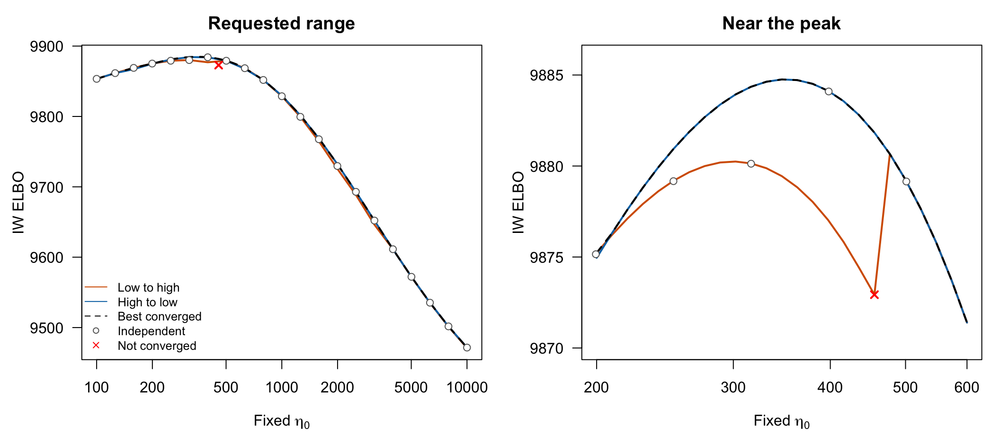

Last updated: 2026-11-01
Checks: 7 0
Knit directory: susieRobust-workflowr/
This reproducible R Markdown analysis was created with workflowr (version 1.7.2). The Checks tab describes the reproducibility checks that were applied when the results were created. The Past versions tab lists the development history.
Great! Since the R Markdown file has been committed to the Git repository, you know the exact version of the code that produced these results.
Great job! The global environment was empty. Objects defined in the global environment can affect the analysis in your R Markdown file in unknown ways. For reproduciblity it’s best to always run the code in an empty environment.
The command set.seed(20261018) was run prior to running
the code in the R Markdown file. Setting a seed ensures that any results
that rely on randomness, e.g. subsampling or permutations, are
reproducible.
Great job! Recording the operating system, R version, and package versions is critical for reproducibility.
Nice! There were no cached chunks for this analysis, so you can be confident that you successfully produced the results during this run.
Great job! Using relative paths to the files within your workflowr project makes it easier to run your code on other machines.
Great! You are using Git for version control. Tracking code development and connecting the code version to the results is critical for reproducibility.
The results in this page were generated with repository version 8931d5d. See the Past versions tab to see a history of the changes made to the R Markdown and HTML files.
Note that you need to be careful to ensure that all relevant files for
the analysis have been committed to Git prior to generating the results
(you can use wflow_publish or
wflow_git_commit). workflowr only checks the R Markdown
file, but you know if there are other scripts or data files that it
depends on. Below is the status of the Git repository when the results
were generated:
Ignored files:
Ignored: .DS_Store
Ignored: .Rhistory
Ignored: .Rproj.user/
Ignored: analysis/.DS_Store
Ignored: analysis/.RData
Ignored: analysis/.Rhistory
Unstaged changes:
Modified: analysis/01-get-started.Rmd
Modified: analysis/index.Rmd
Note that any generated files, e.g. HTML, png, CSS, etc., are not included in this status report because it is ok for generated content to have uncommitted changes.
These are the previous versions of the repository in which changes were
made to the R Markdown (analysis/04-IW-eta-profile.Rmd) and
HTML (docs/04-IW-eta-profile.html) files. If you’ve
configured a remote Git repository (see ?wflow_git_remote),
click on the hyperlinks in the table below to view the files as they
were in that past version.
| File | Version | Author | Date | Message |
|---|---|---|---|---|
| Rmd | 8931d5d | dodat-stats | 2026-11-01 | Connect IW initialization branches to credible sets and SER fallback |
| html | 5826613 | dodat-stats | 2026-11-01 | Build site. |
| Rmd | a119dcd | dodat-stats | 2026-11-01 | Document IW optimization branches and the fixed-eta ELBO profile |
Does sensitivity to the initial \(\eta_0\) imply that the profiled IW ELBO has multiple local maxima? We examine one new simulated locus, using the shared European-like growth model from the v5 simulations.
The locus is 1 Mb, with 200,000 study individuals and 5,000 reference individuals. The populations split \(T=200\) generations ago. Recombination is \(10^{-8}\) per base per generation, and mutation is \(2.36\times10^{-8}\). We use DTWF ancestry for the first 100 generations backward in time, followed by Hudson ancestry, retaining the specified demographic history. We keep all shared variable biallelic SNPs with study MAF at least 1%. This gives 1,752 SNPs and relative LD distance \(\lVert R_0-R\rVert_F/\lVert R\rVert_F=0.2625\).
We sample \(L_{\mathrm{true}}=3\) causal variants without a correlation cutoff, draw independent normal effects, and rescale them so that \(\beta^\top R\beta=h^2/(1-h^2)\) with \(h^2=1\%\). Then \[ v=R\beta+\epsilon,\qquad \epsilon\sim N(0,R/N). \] The master seed is 20261101. This locus was not selected based on its fitting results. One of its three sampled effects is weak.
We fit IW with \(L=10\), fixing \(\eta_0\) at 21 log-spaced values from 100 to 10,000. Lambda and effect prior variances remain free; lambda is bounded by \([10^{-5},0.2]\), and prior variances start at 0.2. SER fallback is disabled. We use independent fits and warm starts along the grid in both directions. The coarse fits use relative tolerance \(10^{-8}\) and at most 1,000 iterations. We then refine the range 200–600 with 25 log-spaced points, tolerance \(10^{-10}\), and at most 2,000 iterations, plus an independent fit at the best refined grid point.
The fits used susieRobust 0.0.0.9002 and susieR 0.14.2. A local copy of the internal fitter supplied continuation and a cached reference spectrum; a regression check confirmed that cached cold fits match the native fitter. This page reads the saved numerical results and regenerates the figure; it does not rerun the simulations or fits.
coarse <- read.csv("data/iw-eta-profile/profile_results.csv")
fine <- read.csv("data/iw-eta-profile/refined_results.csv")
cols <- c("path", "eta0_fixed", "elbo", "converged")
fits <- rbind(coarse[, cols], fine[, cols])
stopifnot(nrow(coarse) == 63, nrow(fine) == 51,
all(coarse$converged), sum(!fine$converged) == 1)
# Highest converged ELBO found at each fixed eta0.
best_found <- function(x) {
x <- x[x$converged, ]
x <- x[order(-x$elbo), ]
x <- x[!duplicated(round(x$eta0_fixed, 8)), ]
x[order(x$eta0_fixed), ]
}
profile <- best_found(fits)
fine_profile <- best_found(fine)Our initialization experiments suggest a tendency: small initial \(\eta_0\) can lead IW to a lower-ELBO solution with one retained credible set, which then triggers SER fallback. Starting larger tends to help IW reach a higher-ELBO solution with multiple credible sets and avoid fallback. This is not a guarantee: large starts can also produce one set, and small starts can find a good multiple-set solution.
The two continuation paths find different ELBO values at the same fixed \(\eta_0\). The lower branch peaks near 302, while the higher branch peaks near 346. Their peak ELBO values differ by about 4.51. The ascending path eventually leaves the lower branch and joins the higher one. This is evidence of sensitivity to the optimization path, consistent with distinct local solutions of the joint variational optimization.
local_peaks <- function(x) {
x <- x[order(x$eta0_fixed), ]
y <- x$elbo
i <- which(y[2:(length(y)-1)] > y[1:(length(y)-2)] &
y[2:(length(y)-1)] > y[3:length(y)]) + 1L
x[i, ]
}
lower <- local_peaks(subset(fine, path == "ascending" & converged))[1, ]
higher <- fine_profile[which.max(fine_profile$elbo), ]
knitr::kable(data.frame(
branch=c("Lower branch", "Higher branch"),
eta0=c(lower$eta0_fixed, higher$eta0_fixed),
ELBO=c(lower$elbo, higher$elbo)
), digits=3, row.names=FALSE)| branch | eta0 | ELBO |
|---|---|---|
| Lower branch | 301.961 | 9880.245 |
| Higher branch | 346.410 | 9884.756 |
oldpar <- par(mfrow=c(1, 2), mar=c(4.2, 4.5, 2.5, 1))
colors <- c(ascending="#D55E00", descending="#0072B2")
draw_profile <- function(points, envelope, xlim, ylim, title) {
plot(envelope$eta0_fixed, envelope$elbo, type="n", log="x",
xlim=xlim, ylim=ylim, xlab=expression("Fixed " * eta[0]),
ylab="IW ELBO", main=title, las=1)
for (path in names(colors)) {
d <- points[points$path == path, ]
d <- d[order(d$eta0_fixed), ]
lines(d$eta0_fixed, d$elbo, col=colors[path], lwd=2)
}
lines(envelope$eta0_fixed, envelope$elbo, lty=2, lwd=2)
cold <- subset(coarse, path == "cold")
points(cold$eta0_fixed, cold$elbo, pch=21, bg="white", col="grey40")
failed <- fits[!fits$converged, ]
points(failed$eta0_fixed, failed$elbo, pch=4, col="red", lwd=2)
}
draw_profile(coarse, profile, c(100, 10000), range(fits$elbo),
"Requested range")
legend("bottomleft",
c("Low to high", "High to low", "Best converged", "Independent", "Not converged"),
col=c(colors, "black", "grey40", "red"),
lty=c(1, 1, 2, NA, NA), pch=c(NA, NA, NA, 1, 4),
lwd=c(2, 2, 2, NA, 2), bty="n", cex=0.8)
draw_profile(fine, fine_profile, c(200, 600), c(9870, 9886),
"Near the peak")
| Version | Author | Date |
|---|---|---|
| 5826613 | dodat-stats | 2026-11-01 |
par(oldpar)All 63 coarse-grid fits converged. One of the 51 refinement fits reached the iteration cap: the ascending fit at \(\eta_0=455.90\). It is marked red and excluded from the best-converged envelope. Its neighbors show the eventual switch to the higher branch.
To connect these branches to fine-mapping, we recovered 95% credible sets from the saved posteriors, using exact minimum absolute correlation at least 0.5 in \(R_0\) and the usual deduplication. The lower branch has one retained CS; the higher branch has two. An additional fit initialized at \(\eta_0=100\), with \(\eta_0\) free to be learned, converged to the lower branch at \(\eta_0\approx300\) and also retained one CS.
branch_cs <- read.csv("data/iw-eta-profile/branch_cs_summary.csv")
stopifnot(all(branch_cs$converged),
identical(branch_cs$n_cs, c(1L, 2L, 1L)),
all(branch_cs$would_trigger_fallback == (branch_cs$n_cs <= 1)))
knitr::kable(data.frame(
Solution=branch_cs$solution,
eta0=branch_cs$eta0,
ELBO=branch_cs$elbo,
CSs=branch_cs$n_cs,
`CS sizes`=branch_cs$cs_sizes,
`Would trigger SER fallback`=ifelse(branch_cs$would_trigger_fallback, "Yes", "No"),
check.names=FALSE
), digits=3, row.names=FALSE)| Solution | eta0 | ELBO | CSs | CS sizes | Would trigger SER fallback |
|---|---|---|---|---|---|
| Lower branch peak | 301.961 | 9880.245 | 1 | 2 | Yes |
| Higher branch peak | 346.410 | 9884.756 | 2 | 1, 2 | No |
| Free eta0, initialized at 100 | 299.875 | 9880.245 | 1 | 2 | Yes |
Strictly speaking, IW does not converge to the SER fallback. It optimizes the IW model first. If zero or one credible set survives filtering, the postprocessing rule substitutes an SER fit. Fallback was disabled in this diagnostic, so the table records whether each saved IW posterior would trigger it if enabled. The displayed ELBOs belong to the original IW fits, not to substituted SER fits.
For this particular locus, the higher branch was reached by continuation from large fixed \(\eta_0\), rather than by a completed free-\(\eta_0\) fit initialized at 10,000; that optional control was stopped before completion. Thus the example connects the two branches to one versus multiple CSs, but is not a complete comparison of small and large free-parameter starts. The branch peaks are also close in \(\eta_0\) (about 302 versus 346): the initial value can affect which posterior solution is reached even when the eventual concentration values are similar.
The ideal profiled ELBO is \[ F(\eta_0)=\max_{q,\lambda,V}\mathcal{L}(q,\lambda,V;\eta_0), \] where \(q\) is the variational distribution and \(V\) denotes the effect prior variances. Profiling takes the best solution over these other quantities at each \(\eta_0\). A lower optimization branch can therefore disappear from the profile wherever another branch has higher ELBO.
The black envelope approximates this maximization using the converged fits we found. On the refined grid it has one local maximum, near \(\eta_0=346\):
peaks <- local_peaks(fine_profile)
stopifnot(nrow(peaks) == 1)
knitr::kable(peaks[, c("eta0_fixed", "elbo")], digits=3, row.names=FALSE)| eta0_fixed | elbo |
|---|---|
| 346.41 | 9884.756 |
Thus initialization sensitivity does not by itself imply two local maxima of the profiled ELBO. This example supports the concern about different optimization branches, but does not establish two profile maxima. The envelope is the best found, not a certified global optimum; a finite grid cannot exclude narrower or undiscovered peaks. One locus also does not tell us how frequently this occurs.
The saved settings and simulation seeds are in
data/iw-eta-profile/settings.json and
data/iw-eta-profile/metadata.json.
sessionInfo()R version 4.6.1 (2026-06-24)
Platform: aarch64-apple-darwin23
Running under: macOS Golden Gate 27.2
Matrix products: default
BLAS: /Library/Frameworks/R.framework/Versions/4.6/Resources/lib/libRblas.0.dylib
LAPACK: /Library/Frameworks/R.framework/Versions/4.6/Resources/lib/libRlapack.dylib; LAPACK version 3.12.1
locale:
[1] C.UTF-8/C.UTF-8/C.UTF-8/C/C.UTF-8/C.UTF-8
time zone: America/New_York
tzcode source: internal
attached base packages:
[1] stats graphics grDevices utils datasets methods base
other attached packages:
[1] workflowr_1.7.2
loaded via a namespace (and not attached):
[1] vctrs_0.7.3 httr_1.4.9 cli_3.6.6 knitr_1.51
[5] rlang_1.3.0 xfun_0.60 stringi_1.8.9 otel_0.2.0
[9] processx_3.9.0 promises_1.5.0 jsonlite_2.0.0 glue_1.8.1
[13] rprojroot_2.1.1 git2r_0.36.2 htmltools_0.5.9 httpuv_1.6.17
[17] sass_0.4.10 rmarkdown_2.32 jquerylib_0.1.4 tibble_3.3.1
[21] evaluate_1.0.5 fastmap_1.2.0 yaml_2.3.12 lifecycle_1.0.5
[25] whisker_0.4.1 stringr_1.6.0 compiler_4.6.1 fs_2.1.0
[29] pkgconfig_2.0.3 Rcpp_1.1.2 rstudioapi_0.19.0 later_1.4.8
[33] digest_0.6.39 R6_2.6.1 pillar_1.11.1 callr_3.8.0
[37] magrittr_2.0.5 bslib_0.12.0 tools_4.6.1 cachem_1.1.0
[41] getPass_0.2-4